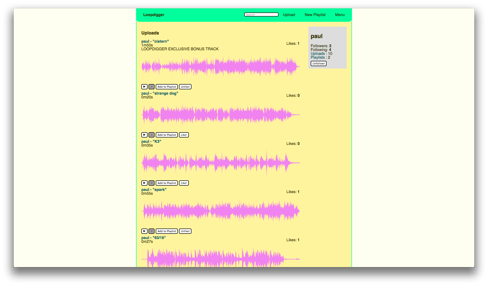

<link rel="stylesheet" type="text/css" href="public/css/jquery.fullPage.css" />

<script src="http://ajax.googleapis.com/ajax/libs/jquery/1.11.1/jquery.min.js"></script>
<script type="text/javascript" src="public/javascript/jquery.fullPage.js"></script>

<script>
  $(document).ready(function() {
    $('#fullpage').fullpage({
      anchors: ['about', 'loopdigger', 'asteroids', 'rails-lite', 'contact'],
      sidebarColors: ['#00FFFF', '#00FFA0', '#00FF41', '#00FEE2', '#00FE83']
    });
  });
</script>

<main id="fullpage">

    <article class="section" data-anchor="about">
      <section class="about">
        <p>
          My name is Paul Alvarez, and I'm a web developer living in
          New York City.
        </p>

        <p>
          <strong>
            I'm actively seeking work where I can apply my current
            skills and develop new ones.
          </strong>
        </p>

        <p>
          Below you'll find my programming portfolio; in addition to
          coding, I enjoy
          <a href="http://soundcloud.com/scaldingcoffee">music</a>,
          running, reading, and learning whenever possible.
        </p>
      </section>
    </article>

    <article class="section" data-anchor="loopdigger">
      <section>
        
      </section>

      <section class="project-header group">
        <h2>Loopdigger</h2>
        <h3>
          (<a href="http://loopdigger.net">live</a> || <a href="https://github.com/pclalv/loopdigger">GitHub</a>)
        </h3>
      </section>

      <section>
        Loopdigger is a SoundCloud-inspired music community built in Ruby on Rails and Backbone.js.
      </section>
    </article>

    <article class="section" data-anchor="asteroids">
      <section>
        
      </section>

      <section class="project-header group">
        <h2>Asteroids</h2>
        <h3>
          (<a href="/asteroids">live</a> || <a href="https://github.com/pclalv/asteroids">GitHub</a>)
        </h3>
      </section>

      <section>
        Description.
      </section>
    </article>

    <article class="section" data-anchor="rails-lite">
      <section>
        
      </section>

      <section class="project-header group">
        <h2>Rails Lite</h2>
        <h3>
          (<a href="https://github.com/pclalv/Rails-Lite">GitHub</a>)
        </h3>
      </section>

      <section>
        I worked on Rails Lite when I was first learning Rails. Rails
        Lite contains all the essentials for running a simple web server
        and serving HTML responses.
      </section>
    </article>

    <article class="section" data-anchor="contact">
      <h2>Contact</h2>

      <ul>
        <li><a href="mailto:#">email</a></li>
        <li><a href="http://github.com/pclalv">GitHub</a></li>
        <li><a href="http://linkedin.com/in/pclalv">LinkedIn</a></li>
      </ul>
    </article>

</main>
